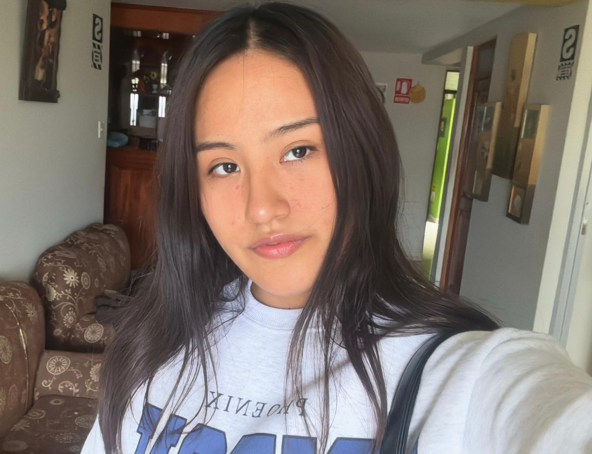

Katerine Angela Huaycani Turpo
Página Web de Katerine Angela Huaycani Turpo

Mi presentacion
Soy alumna de la Universidad Catolia San Pablo de tercer semestre de la carrera de Administracion de Negocios,
mis principales áreas de interés incluyen la gestión empresarial, el análisis de datos y el diseño aplicado a procesos administrativos.
Me especializo en el uso avanzado de herramientas como Excel para la optimización y automatización de tareas administrativas, y cuento con un nivel avanzado de inglés, lo que me permite comunicarme eficazmente en ambientes internacionales. Además, poseo conocimientos básicos en diseño gráfico, lo que complementa mi formación y me permite aportar una mirada creativa y funcional a la presentación y comunicación de información empresarial.
Rendimiento académico
Actualmente estudio la carrera de Administracion de Empresas.
Taller de Excel Avanzado: excelente desempeño
Curso de Diseño Básico: aprobado con mérito
Perfil de estudiante
Nivel de inglés avanzado certificado por el Centro Cultural Peruano Norteamericano .
Capacidad para el análisis y presentación de datos mediante Excel y otras herramientas ofimáticas.
Formación inicial en diseño gráfico, con interés en continuar profundizando esta área.
Cursos Recientes
-Analisis Financiero
-Historia de Occidente I
-Comportamiento del consumidor
-Filosofia de la Naturaleza
-Calculo en una variable
-Liderazgo
-Pensamiento Computacional
Docente de Pensamiento Computacional
Ernesto Cuadros Vargas
Intereses y hobbies
-Gestion de proyectos
-Ver peliculas y series
-Viajar y conocer nuevos lugares
-Aprender a tocar diferentes instrumentos musicales
-Diseñar sitios web
Amistades
- Traicy Pacco Colque
-Marializ Rebeca Cadenas Huillcapacco
Contacto
Katerine Angela Huaycani Turpo
Estudiante de Administración
UCSP
h.katerin.cultural@gmail.com
+51915312351-